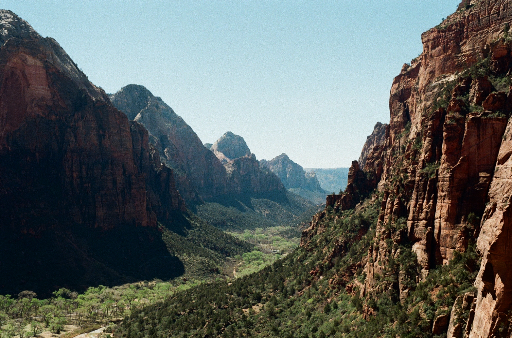
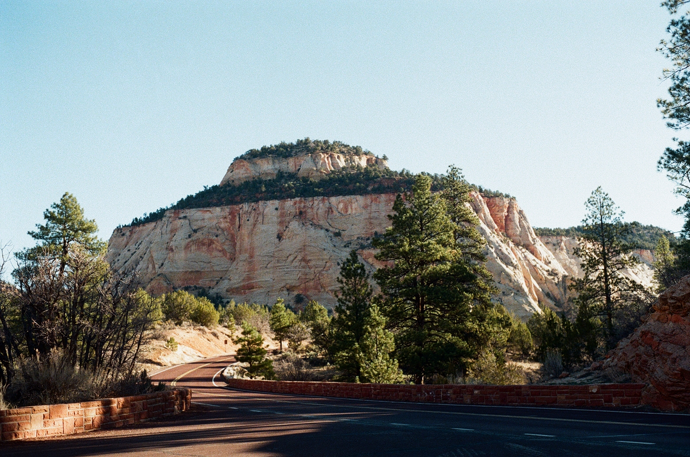
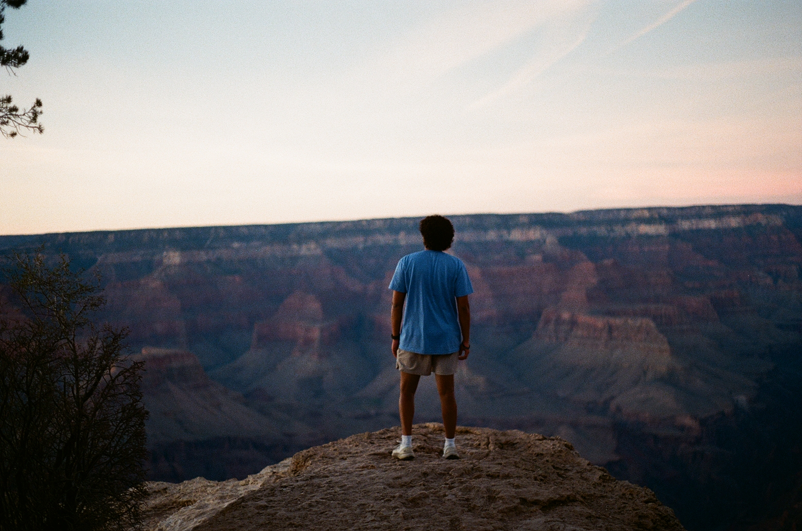
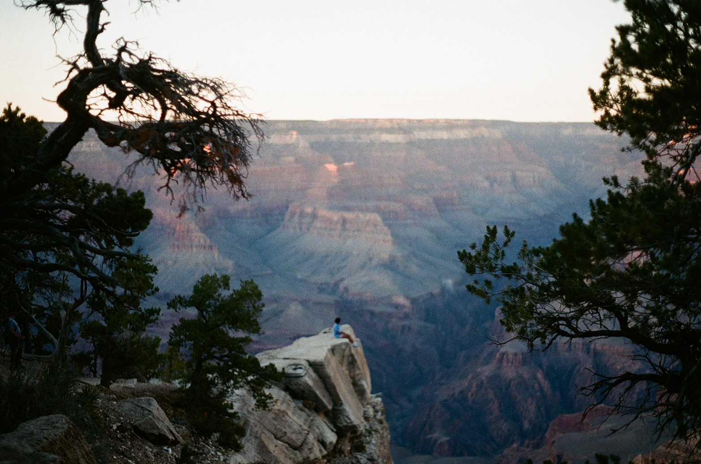
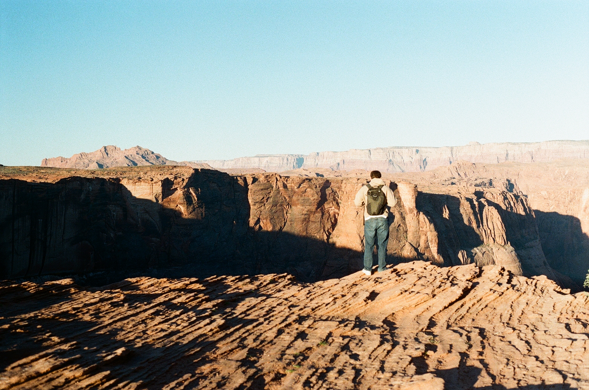
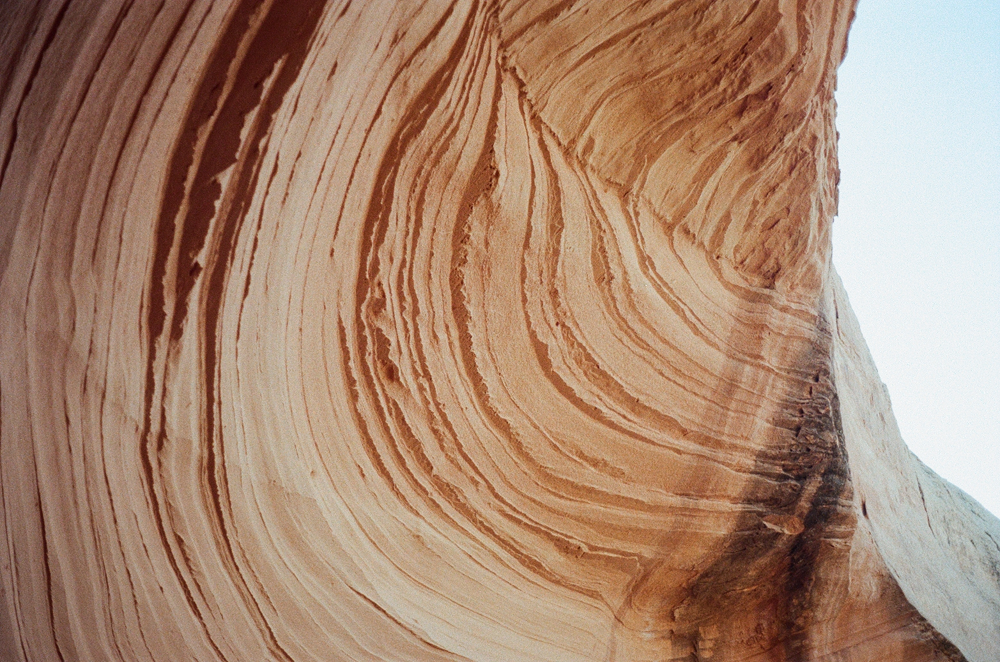
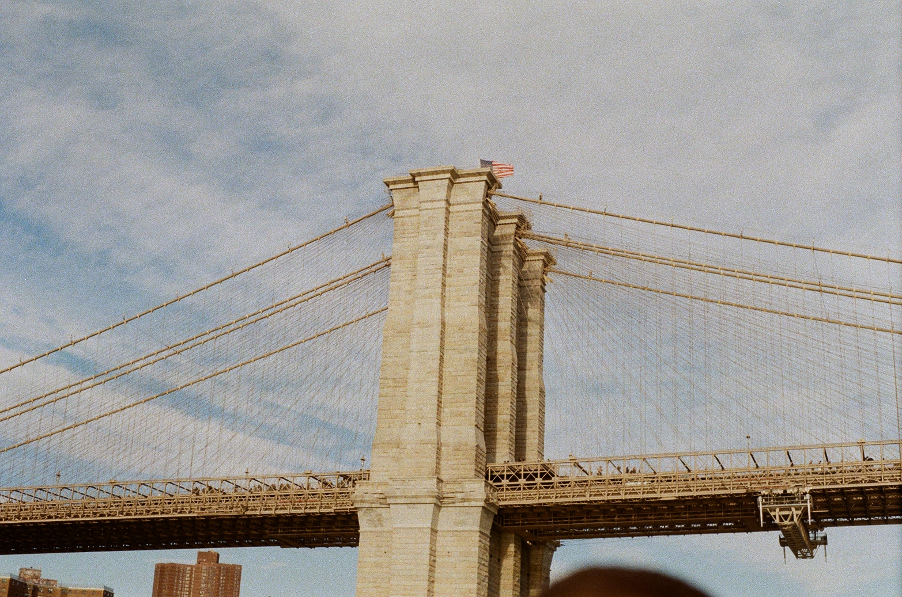
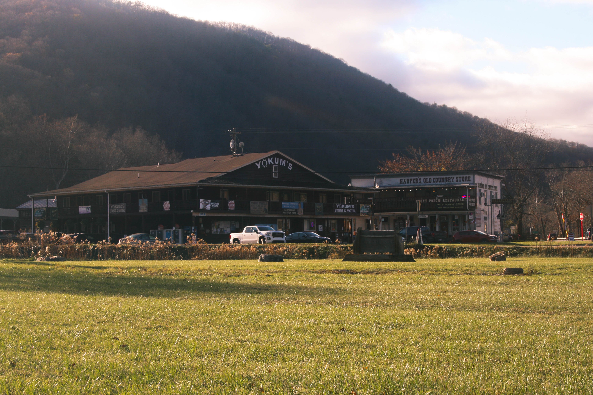
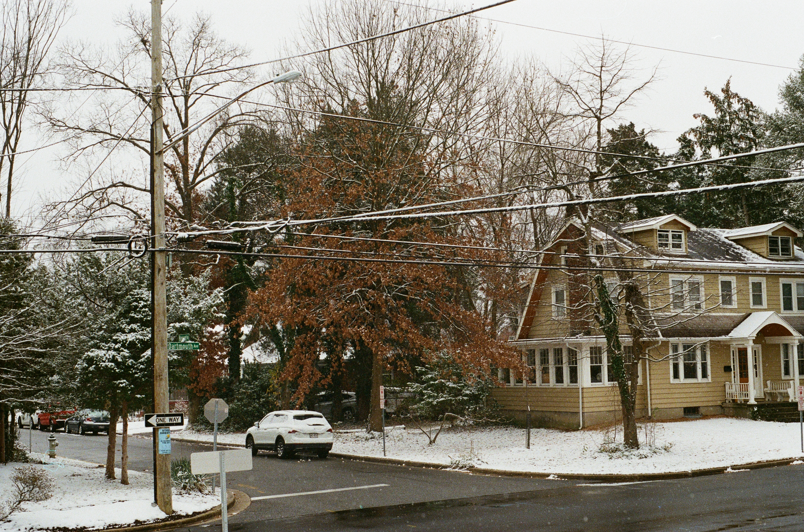

Photography
Moments captured across places and seasons.
Lake Harmony, Pennsylvania
A collection of photographs from a trip to the Poconos and surrounding state parks.
View All →

Arches National Park
A stunning view of the natural stone arches and unique geological formations of Arches National Park.
View All →

Bryce Canyon National Park
A breathtaking view of the unique hoodoo formations and colorful rock layers of Bryce Canyon National Park.
View All →

Zion National Park
A stunning view of the towering sandstone cliffs and vibrant landscapes of Zion National Park.
View All →

Grand Canyon National Park
A breathtaking view of the Grand Canyon at sunset, with the Colorado River winding through the layers of rock.
View All →



New York City
A winter trip to the city — the Rockefeller tree, the Brooklyn Bridge, and the landmarks that define the skyline.
View All →

Lake Artemisia
Wildlife and water at Lake Artemisia Natural Area — wood ducks, mallards, and autumn reflections.
View All →

Seneca Rocks, WV
A weekend trip to the jagged quartzite ridges of Seneca Rocks and the surrounding West Virginia countryside.
View All →

